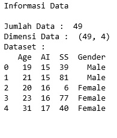
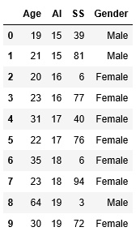
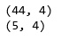

Decision Tree
DECISION TREE (Pohon Keputusan)¶
Decision Trees adalah suatu metode data mining yang bersifat supervised classification dimana setiap record di dalam suatu dataset yang akan dimodel harus mempunyai class/category.
Decision trees secara khusus melakukan pemodelan dengan berusaha memodel record yang tersedia ke dalam bentuk pohon keputusan. Dimana dalam suatu pohon keputusan akan ada interior node yang dilabeli dengan suatu variabel. Dari setiap interior node akan keluar tanda panah yang dilabeli dengan nilai dari variabel yang ada pada interior node tersebut. Di bagian akhir pohon keputusan akan terdapat leaf yang dilabeli dengan class atau category. Dalam penggunaannya, atau dalam pengimplementasian model decision trees ini ke dalam suatu sistem (umumnya sistem pendukung keputusan), model pohon keputusan yang didapat perlu diekstrak ke dalam bentuk rule-rule yang berbentuk if – then.
Secara teori, information gain dirumuskan sebagai berikut:
G(E,f) = H(E) – H(E|f)
dimana: G(E,f) adalah jumlah informasi baru yang diberikan oleh variabel f H(E) adalah entropy dari suatu event E H(E|f) adalah expected entropy dari suatu event E, bila kita mengetahui nilai dari variabel f
Dalam hal ini, entropy dari suatu event E dapat dihitung menggunakan rumus berikut ini:
H(E) = SUM (c in C) P© log2 P©
dimana: P© adalah probabilitas dari event di dalam E yang mempunyai category c.
Struktur dari Decision Tree¶
Decision tree dibentuk dari 3 tipe dari simpul :
- Simpul root adalah titik awal dari suatu decision tree
- Simpul leaf memuat suatu keputusan akhir atau kelas target untuk suatu pohon keputusan
- Setiap simpul perantara berhubungan dengan suatu pertanyaan atau pengujian
Kelebihan dan Kekurangan¶
Kelebihan Pohon Keputusan
• Daerah pengambilan keputusan yang sebelumnya kompleks dan sangat global, dapat diubah menjadi lebih simpel dan spesifik.
• Eliminasi perhitungan-perhitungan yang tidak diperlukan, karena ketika menggunakan metode pohon keputusan maka sample diuji hanya berdasarkan kriteria atau kelas tertentu.
• Fleksibel untuk memilih fitur dari internal node yang berbeda, fitur yang terpilih akan membedakan suatu kriteria dibandingkan kriteria yang lain dalam node yang sama. Kefleksibelan metode pohon keputusan ini meningkatkan kualitas keputusan yang dihasilkan jika dibandingkan ketika menggunakan metode penghitungan satu tahap yang lebih konvensional
• Dalam analisis multivariat, dengan kriteria dan kelas yang jumlahnya sangat banyak, seorang penguji biasanya perlu untuk mengestimasikan baik itu distribusi dimensi tinggi ataupun parameter tertentu dari distribusi kelas tersebut. Metode pohon keputusan dapat menghindari munculnya permasalahan ini dengan menggunakan criteria yang jumlahnya lebih sedikit pada setiap node internal tanpa banyak mengurangi kualitas keputusan yang dihasilkan.
Kekurangan Pohon Keputusan
• Terjadi overlap terutama ketika kelas-kelas dan criteria yang digunakan jumlahnya sangat banyak. Hal tersebut juga dapat menyebabkan meningkatnya waktu pengambilan keputusan dan jumlah memori yang diperlukan.
• Pengakumulasian jumlah eror dari setiap tingkat dalam sebuah pohon keputusan yang besar.
• Kesulitan dalam mendesain pohon keputusan yang optimal.
• Hasil kualitas keputusan yang didapatkan dari metode pohon keputusan sangat tergantung pada bagaimana pohon tersebut didesain.
Model Pohon Keputusan¶
Pohon keputusan adalah model prediksi menggunakan struktur pohon atau struktur berhirarki. Contoh dari pohon keputusan dapat dilihat di Gambar berikut ini.

Implementasi :¶
pertama import,
- pandas : librari analisis data yang memiliki struktur data yang kita perlukan untuk membersihkan data mentah ke dalam sebuah bentuk yang cocok untuk analisis (yaitu tabel).
import pandas as pd
from sklearn.tree import DecisionTreeClassifier
from sklearn import model_selection
from sklearn import metrics
from sklearn.model_selection import train_test_split
from sklearn.tree import export_graphviz
from sklearn.externals.six import StringIO
import pydotplus
from IPython.display import Image
file yang akan kita olah merupakan file csv maka perintah nya :
#memuat file csv
df=pd.read_csv('customers.csv')
#menampilkan data
print("Informasi Data\n")
print("Jumlah Data : ", len(df))
print ("Dimensi Data : ",df.shape)
print ("Dataset :")
print(df.head())
print('\n')Menampilkan data :

Kedua, gunakan perintah untuk menampilkan 10 baris pertama pada tabel :
#10 baris pertama
df.head(10)
Tampilannya tabel seperti dibawah ini :

Ketiga, Memisah Dataset :
#splitting dataset ke training dan testing
train, test = train_test_split(df, test_size = 0.1,random_state=1234)
#mencari hasil
print(train.shape)
print(test.shape)Outputnya :

keempat, menentukan entropy datanya :
entropy= DecisionTreeClassifier(criterion="entropy",random_state=1234)
entropy.fit(X_train,Y_train)
prediction=entropy.predict(X_validation)Kelima, menampilkan pohon data :
feature_cols=['Age','AI' ,'SS']
dot_data = StringIO()
export_graphviz(entropy, out_file=dot_data,
filled=True, rounded=True,
special_characters=True,feature_names = feature_cols,class_names=['Male','Female'])
graph = pydotplus.graph_from_dot_data(dot_data.getvalue())
graph.write_png('entropy.png')
Image(graph.create_png())
Keenam, menampilkan hasil prediksi :
print("Hasil prediksi menngunakan entropy")
#Membentuk kembali diperlukan untuk melakukan penggabungan
pred_clf_df = pd.DataFrame(prediction.reshape(15,1))
#Ganti nama kolom untuk menunjukkan prediksi
pred_clf_df.rename(columns={0:'Prediction'}, inplace=True)
#membentuk kembali dataset uji
X_validation_df = pd.DataFrame(X_validation.reshape(15 ,4))
#menggabungkan dua bingkai data panda di atas kolom untuk membuat dataset prediksi
pred_outcome = pd.concat([X_validation_df, pred_clf_df], axis=1, join_axes=[X_validation_df.index])
pred_outcome.rename(columns = {0:'STG',1:'SCG',2:'STR' ,3:'LPR' ,4: 'PEG'}, inplace=True)
#cetak 10 baris prediksi akhir
print((pred_outcome).head(15))
print ("\n")
#mengevaluasi(Accuracy)
print("Accuracy:",metrics.accuracy_score(prediction,Y_validation))
Untuk melihat akurasi syntax kodenya adalah sebagai berikut. silhkan ketik pada program anda :
print("Accuracy:",metrics.accuracy_score(prediction,Y_validation))Referensi :
https://yudiagusta.wordpress.com/2008/07/16/decision-trees/
http://muhammadlukmanulhakim46.blogspot.com/2017/01/pohon-keputusan-kelebihan-dan-kekurangan.html
https://fairuzelsaid.wordpress.com/2009/11/24/data-mining-konsep-pohon-keputusan/